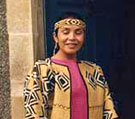

A modo de introducción de este Mundo, les comparto este escrito que es de mi agrado ¡y espero que también lo sea para ustedes:

Aborígenes de la Antigua y Nueva Civilización.
Nosotros estamos aquí.
Nosotros estamos despertando ahora, desde el pasado,
para soñar el gran sueño.
Nosotros somos amigos e iguales, somos diversos y únicos.
Y estamos unidos por algo más importante que nuestras diferencias.
Nosotros creemos en la libertad y en la cooperación,
en la abundancia y la armonía.
Nosotros somos una cultura emergente,
un renacimiento de la esencia de la humanidad.
Nosotros tenemos una misión que cumplir en la Tierra.
Nosotros encontramos nuestras guías, y discernimos
Nuestras propias verdades.
Nosotros vamos en muchas direcciones, pero no estamos dispersos.
Nosotros tenemos muchos nombres, hablamos muchos lenguajes.
Nosotros somos locales y globales.
Nosotros estamos en todas las regiones del mundo
Y en cualquier lugar del aire.
Nosotros somos poderosos, porque nuestro poder se fundamenta en el AMOR.
Nosotros ...
estamos en los ojos de todos los niños.
Nosotros enfrentamos lo desconocido maravillados y con excitación.
Nosotros somos mensajeros del futuro, viviendo en el presente
Nosotros venimos desde el silencio y decimos nuestras verdades.
Nosotros no podemos ser callados, porque todas nuestras voces están dentro
de cada uno.
Nosotros no tenemos enemigos. Ninguna frontera puede encerrarnos.
Nosotros respetamos los ciclos y las expresiones de la naturaleza, porque
nosotros somos la naturaleza.
Nosotros no jugamos para ganar. Jugamos para vivir y aprender.
Nosotros actuamos con inspiración, amor e integridad.
Nosotros nos equivocamos y tratamos de aprender de nuestros errores.
Nosotros exploramos. Nosotros descubrimos.
Nosotros sentimos. Nosotros reímos.
Nosotros estamos construyendo un mundo que funcione para todos.
Nosotros intentamos vivir nuestras vidas con todo su potencial creador.
Nosotros somos independientes, autosuficientes, responsables.
Nosotros nos relacionamos con los demás en paz,
Con respeto y en compasión.
Nosotros celebramos la plenitud dentro y alrededor nuestro.
Nosotros danzamos al ritmo de la creación.
Nosotros tejemos los hilos del Nuevo Tiempo
La Tierra junto con todas las especies, vive una gran transformación que
traerá un cambio de paradigma. De acuerdo con aquellos que han mantenido
las antiguas ciencias y la sabiduría ancestral, en estos tiempos se deja
sentir una aceleración de los procesos que no solo incluyen a la humanidad
sino también a la naturaleza y al cosmos.
A través de los miles de años que precedieron la actual historia, la Tierra
y las humanidades anteriores que vivieron en ella han pasado por aquellos
grandes cambios tal como quedara asentado en la tradición oral y escrita a
través del paso de las eras.
Tanto el testimonio científico como el de la tradición, coinciden con
aquellas etapas de la evolución y aunque sean nombradas de diferentes
maneras, corresponden básicamente a precisos ciclos cósmicos bien conocidos
por los antiguos Mayas, Aztecas, Incas, Chinos, Hindúes, Hopis, astrónomos
y sabios del tiempo en este y otros continentes.
Nos encontramos en el umbral de un Nuevo Tiempo, el tiempo en que la gente
de todas las direcciones se reunirá en una Tierra como un solo ser. Así lo
anunció la profecía Hopi:
“Cuando la Tierra esté enferma y los animales salvajes estén
desapareciendo, una tribu compuesta por gente de todas las culturas vendrá
a decir con hechos y no con palabras, que el Amor es fuente de curación y
ayudarán así a restaurar la vida en el planeta”.